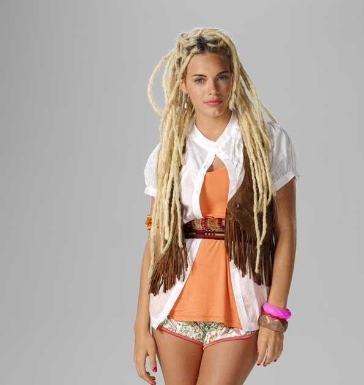

Protagonistas

Tacho
Juan “Tacho” Morales forma parte del grupo original de Teen Angels. Es carismático, impulsivo y muy leal a sus amigos. A lo largo de la historia mantiene una relación muy importante con Jazmín.

Mar
Marianella “Mar” Rinaldi es una de las protagonistas centrales de la serie. Tiene un carácter fuerte, espontáneo y sensible. Su historia está muy vinculada a Thiago y a la formación de Teen Angels.

Jazmín
Jazmín Romero es una de las integrantes originales de Teen Angels. Se destaca por su sensibilidad, personalidad y pasión por la música. Su relación con Tacho atraviesa gran parte de la serie.

Thiago
Thiago Bedoya Agüero es hijo de Bartolomé y uno de los integrantes de Teen Angels. Es inteligente, decidido y busca construir un camino diferente al de su padre. Su relación con Mar es uno de los ejes principales de la historia.

Rama
Ramiro “Rama” Ordóñez es uno de los miembros originales de Teen Angels. Es sensible, protector y muy cercano a sus amigos. La música y sus vínculos personales tienen un lugar importante en su historia.
Cielo
Ángeles Inchausti, conocida como Cielo Mágico, transforma la vida de los chicos al llegar a la Fundación. Su vínculo con Nicolás, su relación con Eudamón y su rol como guía son fundamentales en las primeras etapas de la serie.
Nico
Nicolás Bauer es un arqueólogo y aventurero que se convierte en una figura muy importante para los chicos. Junto con Cielo busca protegerlos y ayudarlos a construir una vida diferente.

Paz
Paz Bauer es hija de Nicolás y Cielo y adquiere un rol central en la tercera temporada. Los protagonistas deberán protegerla, ya que su destino está directamente relacionado con Eudamón y con el futuro.